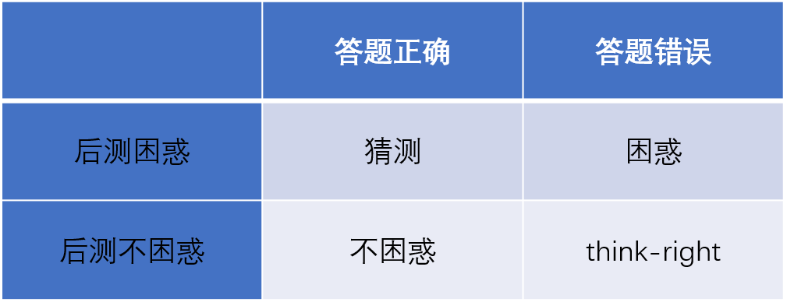

Stimuli and Experiment
我们使用瑞文高级推理实验作为受试者的视觉刺激材料，诱导受试者产生不同的情绪，同时采集相对应的脑电信号，瑞文测试共包含48个推理问题。 本次实验所用实验范式如下图所示。
受试者进行实验时，屏幕首先会呈现一段关于本次实验的相关介绍。介绍完成之后会进入实验的第一阶段，屏幕上会随机呈现10张与本次实验无关的风景图片，每次呈现10s。 在每次图片呈现之前，屏幕会出现注视点提醒图像即将被呈现。该阶段被记录的脑电数据被标记为relax。 风景图像结束之后，将会进入实验的第二阶段。在第二阶段，屏幕会随机呈现48道瑞文测试题目的图片，每张题目呈现15s，受试者可以按相应的键盘字母来选择自己认为正确的 题目答案，15s过后或者受试者答题完成之后，播放下一张测试图片。 在实验开始、风景图片呈现、每次注视点出现、瑞文测试图片出现和实验结束时均设置了标记进行标识。
Subjects
数据库中记录了34名受试者的脑电数据。 受试者的年龄在21 ~ 35岁，平均24.5岁，标准差3.84岁，其中16名男性，18名女性。所有受试者均具有本科及以上学历。 所有受试者均为右撇子，无智力或听力障碍，且均为中国人。Dataset Summary
数据集下载完成解压之后，可以得到瑞文实验数据文件夹。在该文件夹中包含34个存储各个受试者脑电信号的子文件夹subject_id, id范围为[1-34]。 一份数据详情表文件--数据详情表, 该表中记录了34名受试者性别等基本信息，姓名等隐私信息已经提前抹去。以及34名受试者对48道瑞文测试的后测情况， 即在测试结束之后回忆做题的时候是否对那题产生过困惑情绪。 一份异常情况数据说明, 记录在实验进行时存在的数据异常情况。 每个受试者子文件夹包含两个文件夹：eeg文件夹里面存放的为被试的脑电数据，其中trigger1标志实验开始Instruction1的呈现，trigger2表示每张风景图片的呈现时间点， trigger3标志fixation的出现，trigger4标志瑞文图片的出现，trigger5标志实验结束。behavior文件夹是被试做实验期间的行为数据。脑电数据使用BrainVision数据格式记录，所以每个 eeg文件夹中包含三个文件0000_subjectid.eeg, 0000_subjectid.vhbr, 0000_subjectid.vmrk。.eeg是一个二进制文件记录脑电的电压值，.vmrk是包含数据中事件信息的文本标记文件， .vhdr是包含元数据的文本头文件。可以使用python或者matlab来打开这些文件。本次实验总共记录了31个通道的脑电信号，分别是：'Fp1','F3','F7','FT9','FC5','FC1','C3','T7','TP9','CP5','CP1', 'Pz','P3','P7','O1','Oz','O2','P4','P8','TP10','CP6','CP2','Cz','C4', 'T8','FT10','FC6','FC2','F4','F8','Fp2'。通道位置符合国际10-20导联标准。 一个类别文件class_all.csv，表示每个受试者每段瑞文测试脑电信号对应的情绪标签。其中1是困惑，2是猜测，3是不困惑，4是think-right。每个标签由答题准确率1和后测结果两个维度得出。 如下图所示：